import matplotlib.pyplot as plt7 Graphical Depictions of Data
Plot all the things!
7.1 Introduction to matplotlib
matplotlib is the most widely used scientific plotting library in Python. For many data related purposes, the sub-library called matplotlib.pyplot is all that is necessary to use. A fantastic feature of the Jupyter environments is that anytime we create a plot, we can view it directly inline with our code, allowing us to make adjustments quickly and easily as we go along.
We will typically import this library with the name plt:
Simple plots are then straightforward to create:
x = [1, 2, 3, 4, 5]
y = [1, 8, 27, 64, 125]
plt.plot(x, y)
plt.show()
In Jupyter environments, running the cell that produces a plot will generate the figure directly below the code, and then the figure is saved with the notebook document for future viewing. However, other Python environments, such as an interactive Python session started from a terminal, or a Python script executed at the command line or within VSCode, require an additional command to display the figure. To do this, we use the basic call:
plt.show()Directly after creating our plot using plt.plot(...).
This command can also be used within a Notebook - for instance to display multiple figures if they are created within a single cell:
# create some lists of data
x = [1, 2, 3, 4, 5]
y1 = [2, 4, 6, 8, 10]
y2 = [1, 4, 9, 16, 25]
# plot and display x vs y1
plt.plot(x, y1)
plt.show()
# plot and display x vs y2
plt.plot(x, y2)
plt.show()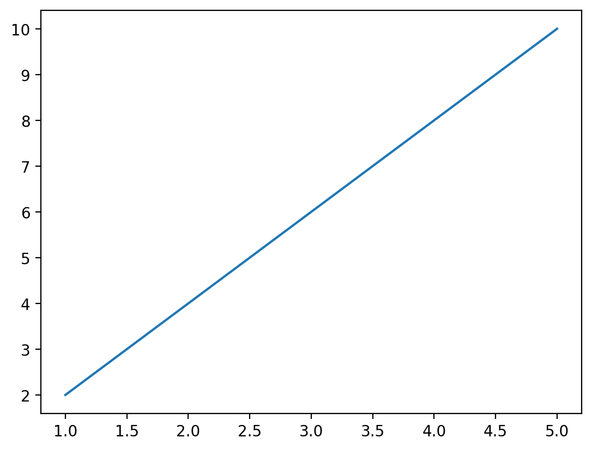
We recommend as accepted practice to always include a call to plt.show() if you ever intend to show a plot, in a notebook or otherwise.
Plots typically require some set of values to supply to the x value, and an equal length set of values to supply to the y value. If we supply mismatched data, we will get an error:
x = [1, 2, 3, 4, 5]
y = [1, 8, 27, 64]
plt.plot(x, y)ValueError: x and y must have same first dimension, but have shapes (5,) and (4,)In the above examples, we used lists of numbers to supply for our dataset. However, we can also use values directly from pandas dataframes. So let’s work on a new dataset in a pandas dataframe. We will load this dataset from the Seaborn package. Seaborn is another plotting library which we will learn how to use in subsequent sections - but it also has a great built-in dataset that we are going to use to demonstrate matplotlib now, and seaborn later. This dataset looks at species of penguins, and compares various anatomical body part sizes to their species, location and sex.
load_dataset('penguins')
from seaborn import load_dataset
penguins = load_dataset('penguins')
penguins.sample(10)| species | island | bill_length_mm | bill_depth_mm | flipper_length_mm | body_mass_g | sex | |
|---|---|---|---|---|---|---|---|
| 111 | Adelie | Biscoe | 45.6 | 20.3 | 191.0 | 4600.0 | Male |
| 45 | Adelie | Dream | 39.6 | 18.8 | 190.0 | 4600.0 | Male |
| 273 | Gentoo | Biscoe | 50.1 | 15.0 | 225.0 | 5000.0 | Male |
| 139 | Adelie | Dream | 39.7 | 17.9 | 193.0 | 4250.0 | Male |
| 56 | Adelie | Biscoe | 39.0 | 17.5 | 186.0 | 3550.0 | Female |
| 112 | Adelie | Biscoe | 39.7 | 17.7 | 193.0 | 3200.0 | Female |
| 90 | Adelie | Dream | 35.7 | 18.0 | 202.0 | 3550.0 | Female |
| 0 | Adelie | Torgersen | 39.1 | 18.7 | 181.0 | 3750.0 | Male |
| 85 | Adelie | Dream | 41.3 | 20.3 | 194.0 | 3550.0 | Male |
| 238 | Gentoo | Biscoe | 46.2 | 14.5 | 209.0 | 4800.0 | Female |
Let’s try comparing the length of the penguin bill to the depth of the bill.
plt.plot(penguins['bill_length_mm'], penguins['bill_depth_mm'])
plt.show()Okay, that doesn’t look great. That is because the default behaviour of plot is to draw a line plot, which connects all the data points in the order in which they are given. For this type of comparison, a different matplotlib plot may work better. Some of the basic plots include:
plt.plot(x, y)- produces a line plot of x versus yplt.scatter(x ,y)- produces a scatter plot of x versus yplt.bar(x, height)- produces a bar plot with bars of height ‘height’ positioned at x. Typically reserved for aggregated data!plt.hist(x)- produces a simple box histogram for a single column of data
Let’s try to look at the bills again, but this time with a more appropriate comparison plot:
plt.scatter(penguins['bill_length_mm'], penguins['bill_depth_mm'])
plt.show()That’s looking better. But we still need to clean up our plot a little bit. Matplotlib includes methods for adding axis labels, titles, legends and so on. The trick is in figuring out how to apply these methods to the right plot…
plt.xlabel('Bill Length (mm)')
plt.ylabel('Bill Depth (mm)')
plt.title('Penguin Beaks')
plt.show()What happened here! Matplotlib drew an axis for us, but neglected to include the data we had provided above. The key to this is in the way that matplotlib interprets the current figure. Anytime we begin a plot method with plt.method()..., matplotlib recognizes this plot instruction to be part of the current figure. Matplotlib will then go through all of the plot instructions one-by-one, adding each individual piece to the current figure. This continues until we hit the plt.show() line, which tells the program we are done adding to this plot, and any new commands should belong to a new plot.
Jupyter vs. Python
There is a slight distinction between how Jupyter will handle figures vs. how a Python script wil handle figures. When Jupyter hits the end of a cell or codeblock, it will automatically show the figure at the end of the output, regardless of whether plt.show() was called or not. This is equivalent to calling plt.show() however - a new codeblock will not recognize the code used to create this plot in a new cell.
Let’s finally get this all together on one plot:
plt.scatter(penguins['bill_length_mm'], penguins['bill_depth_mm'])
plt.xlabel('Bill Length (mm)')
plt.ylabel('Bill Depth (mm)')
plt.title('Penguin Beaks')
plt.show()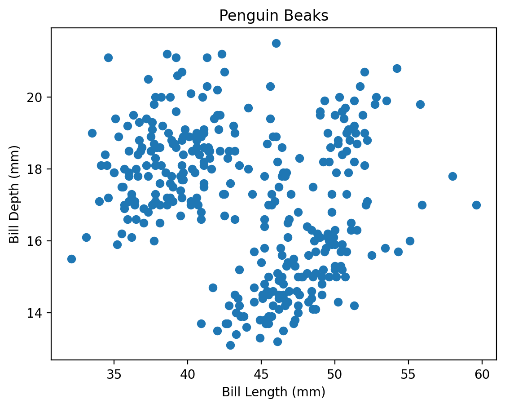
Note that because of this matplotlib behaviour (include every instruction to plt up until it reaches a plt.show() or end of Jupyter cell), we can take advantage to draw multiple plots on a single axis! Some further behaviour includes:
- If a second plot of the same type as the first is created within the same figure, matplotlib will automatically assign it a new colour
- To distinguish between plots, the argument
label = 'plot name'can be provided during creation of the plot. A final call toplt.legend()after creating all plots will produce a legend that consists of the given labels.
Challenge 1
7.2 Plotting Directly From Pandas
That was a lot of work to make a relatively straightforward plot. While matplotlib is extremely versatile, this same versatility comes at the expense of having to tweak the underlying code frequently to make the plots look the way that we want. Luckily, there exist other libraries that have been built on top of matplotlib that take care of much of the abstraction, so we can get directly to looking at our results as fast as possible!
One extremely straightforward way to plot is directly from pandas, which implicitly uses matplotlib.pyplot in the background.
penguins.plot.scatter(x = 'bill_length_mm', y = 'bill_depth_mm')
plt.show()For some plot types, we are also given the ability to provide a grouping category.
penguins.plot.hist(column='flipper_length_mm', by='sex')
plt.show()
While pandas provides a straightforward way to quickly look at the data, it is fairly limited, and we will still end up needing to default back to matplotlib methods to get high-quality plots. The next package will help with this!
7.3 Introduction to Seaborn
Seaborn is a library for making statistical graphics in Python. It builds on top of matplotlib but is uniquely built to integrate closely with pandas data structures. Seaborn is dataset-oriented, and was built specifically to let you focus on what the different elements of a plot mean, rather than on the details of how to draw it. Leveraging seaborn allows us to build high quality graphics in a minimal amount of code. This not only allows us to spend more time analysing outputs and results, but also makes the code more transparent and easier for others to follow and understand.
Seaborn is usually imported with the shorthand sns. On top of this, it is often nice to reset the default matplotlib colour theme and layout to the default seaborn layout, which has more subdued colours and tones. This can be done globally via the .set_theme() method. Changing the theme will apply to any other plots created in a notebook/script, even if they are created specifically by matplotlib. More options for the theme or style (which can also be set via .set_style()) can be found in the Seaborn aesthetics tutorial.
import seaborn as sns
sns.set_theme()Within seaborn, we will focus on three main plot types:
- Relational plots
- Distributions
- Categorical plots
All three of these modules have a higher figure-level interface (relplot, displot, catplot) that have options to produce the different subvarieties. They also have an axes-level interface (for example, histplot inside the displot category) that allows for more control over the matplotlib backend being used to produce the plot. For our purposes, we will stick to the high level interface as it is capable of producing beautiful plots with a few simple commands.
Seaborn plot categories.
Advanced Tip - Figure vs. Axes Level?

Matplotlib Figures
You will notice that I mentioned figure vs. axes level interfaces for seaborn. This is a small but subtle distinction that is worth explaining in more detail. When we introduced matplotlib, we explained that you can create multiple different plots all on the same figure. This is because matplotlib plots are individually drawn onto a common axis, but each individual plot does not own the axis, titles, legends, and so on. Matplotlib produces a base axis, then draws each individual plot on top, and then adds the extra pieces as requested. All the accompanying fluff (title, legend) that surrounds the axis is part of the overall figure, which we set with commands such as plt.xlabel(), plt.title() and so on.
So a figure can be thought of as the overall container holding each plot and accompanying axis labels. In seaborn, the figure-level interface we will be using is just this - figure-level. It is a ‘finished product.’ Producing a plot via the relplot, displot, and catplot methods will produce an entire figure, complete with titles, legends, and anything else we might specify, such as the figure size. However, this entire figure is no longer easily accessible like a matplotlib axis is (we cannot add a plot like this to a different set of matplotlib plots, for example).
This can be useful as it will simplify the amount of code needed to create a report-ready figure. However, the drawback is that it reduces the customizability we have to work with. So if we wish to work with customizable axes that we can quickly drop into more complex matplotlib plots, we should use the axes-level interface (eg. using sns.scatterplot() instead of sns.relplot()). If we want to produce standard statistical plots, the figure-level interface is the recommended tool as they produce cleaner plots.
Check out the Seaborn tutorial for more details on the differences between these methods!
Before we dive into the particulars, here’s a wonderful one line command to show just how powerful seaborn can be!
sns.pairplot(penguins, hue='species', height=1.75)
plt.show()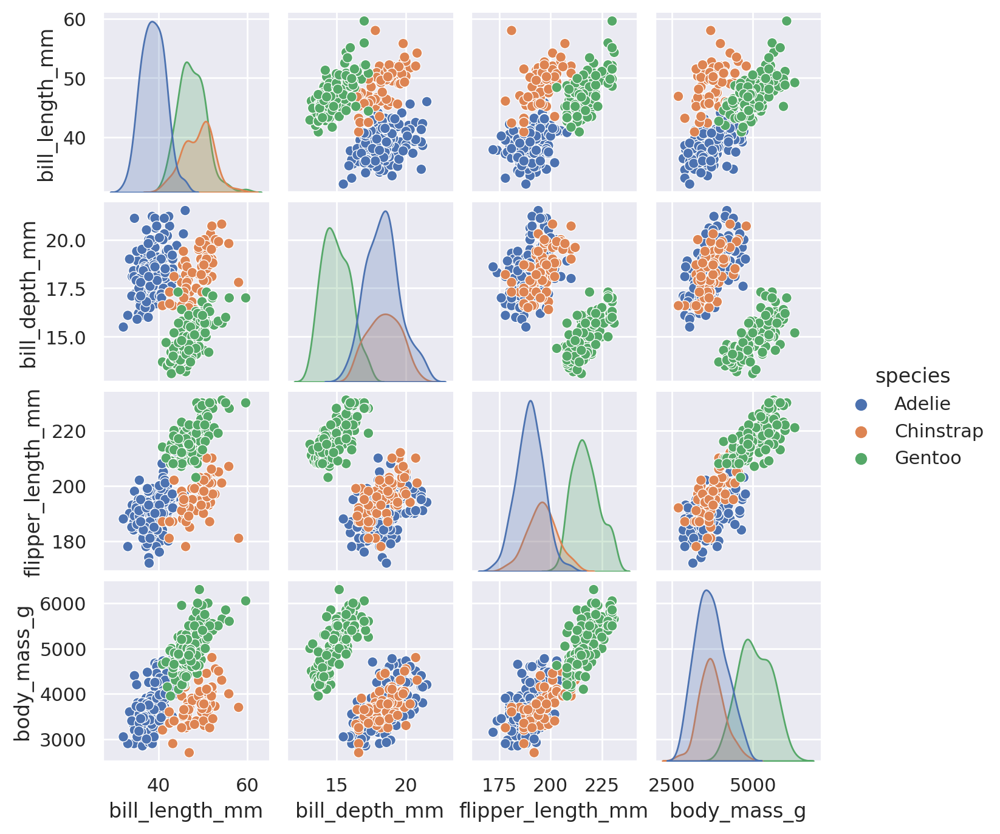
Relational Plots
Correlation \(\neq\) Causation
Relational plots let us quickly look for patterns in our dataset between two different features. The most common approach is to use scatter or lineplots, depending on the type of data we have. A timeseries, for example, will often be displayed with a lineplot, while any two numerical features can be plotted against each other with a scatterplot.
When we use the high-level relplot method, we need to supply our pandas dataframe, as well as which columns we are interested in plotting. The default plot type is to use a scatterplot:
sns.relplot(data=penguins, x='body_mass_g', y='flipper_length_mm')
plt.show()However, we can force the line plot by including the optional kind argument:
sns.relplot(data=penguins, x='body_mass_g', y='flipper_length_mm', kind='line')
plt.show()When we utilize the lineplot option, Seaborn will default to automatically aggregating data along the x-axis, displaying uncertainty in the y-axis with confidence intervals. Note that it also doesn’t care about the initial order of the data. Seaborn automatically assumes that we wanted a nicely flowing line from left to right, and will sort the x values accordingly.
Challenge 2
Although relational plots are two dimensional in their presentation, we can add a third dimension to the data by applying the hue, size, and style arguments to secondary columns.
sns.relplot(data=penguins, x='body_mass_g', y='flipper_length_mm', hue='species')
plt.show()
sns.relplot(data=penguins, x='body_mass_g', y='flipper_length_mm', style='sex')
plt.show()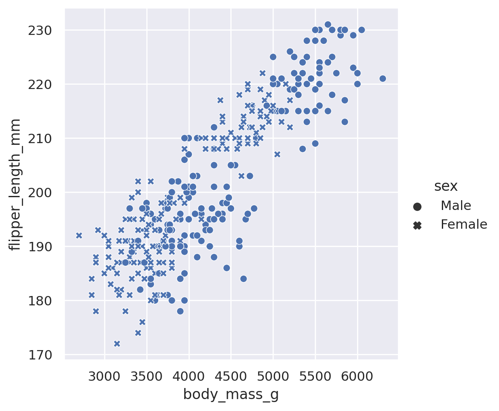
When used on a non-categorical column, the hue and size arguments will provide sequential coloring and sizing:
sns.relplot(data=penguins, x='body_mass_g', y='flipper_length_mm', hue='bill_length_mm')
plt.show()
sns.relplot(data=penguins, x='body_mass_g', y='flipper_length_mm', size='bill_length_mm')
plt.show()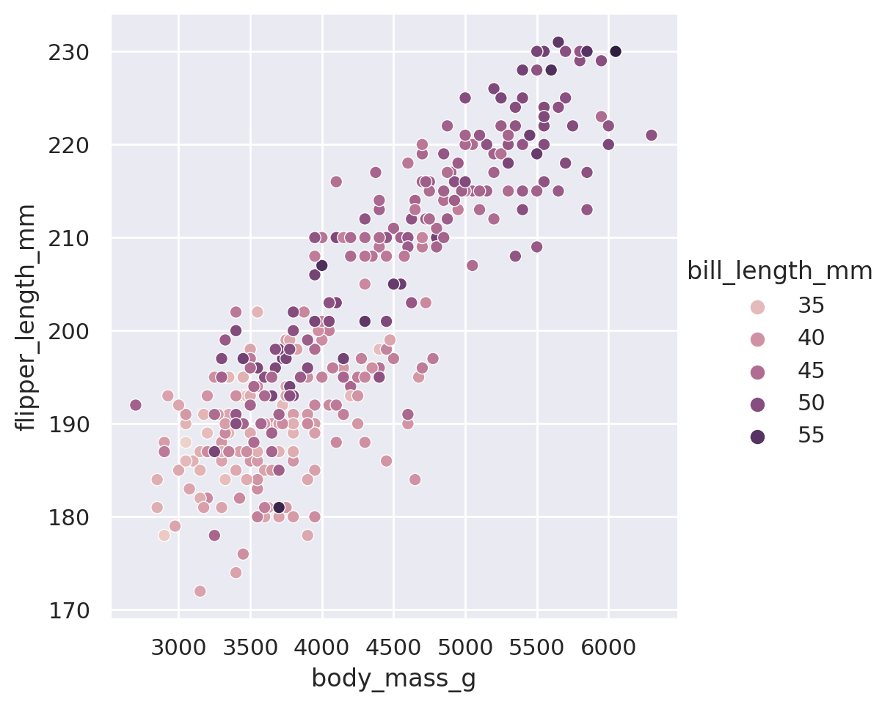
We can also mix and match multiple different styling choices. Note that here, we want to be cautious about creating our plots using too many different styling choices. While informative, they can be tricky to interpret if we use too many all at once.
sns.relplot(
data=penguins, x='body_mass_g', y='flipper_length_mm',
hue='species', style='species'
)
plt.show()
sns.relplot(
data=penguins, x='body_mass_g', y='flipper_length_mm',
hue='sex', size='bill_length_mm'
)
plt.show()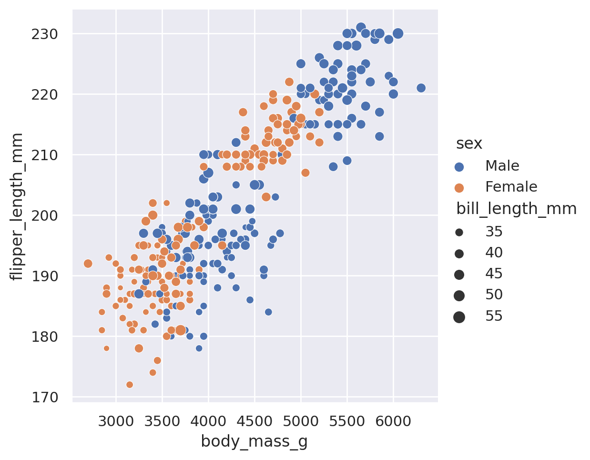
Reminder: Use Multiple Lines!
In that last example you’ll notice that I broke the code up for the plot onto multiple lines. When you start to have many arguments being supplied to a function, it is often a good idea to put different arguments on different lines for readability. As long as argument stays with the brackets, you can use as many lines or indentations as you want!
If we want to avoid using too many different styling choices, but we would still like to understand how our features vary across different categories, we can make multiple plots using the built in row and col arguments of the relplot objects. By supplying a category to row (col), Seaborn is told to split the dataset into all the different values in the category. Then each subset of the data is plotted on a different row (column) of the data. The end result is a grid of plots, with each plot having a unique subset of the category represented.
g = sns.relplot(
data=penguins, x='body_mass_g', y='flipper_length_mm',
row='island', col='species', hue='sex',
height=2.5
)
g.set_titles(size=8) # include this line because the titles will overlap otherwise!
plt.show()Finally, a frequent goal of creating a scatter plot is to identify if there is a trend in the data. Seaborn offers an extra method, lmplot, to allow for quick viewing of best fit lines (including confidence interval estimates) in our datasets:
sns.lmplot(data=penguins, x='body_mass_g', y='flipper_length_mm', hue='sex')
plt.show()Note that because we included a third categorical dimension (hue='sex'), we have actually displayed two different best fit lines: the best relationship between body mass and flipper length for male penguins, and the best relationship for female penguins as well.
This method is capable of doing more than the default linear regression! Some such arguments available include:
logistic: boolean. If True, will estimate a logistic regression.robust: boolean. If True, will de-weight far outliers in performing the regression.order: integer. If supplied, will fit a polynomial regression with the given order.
Summary
That is a lot to take in. To summarize the relational plots available in Seaborn:
relplotis the go-to tool to create a statistical comparison plot between two numerical columns- These plots default to scatter, but can be made into lineplots with
kind='line' style,hue, andsizecan all be adjusted to provide insight into both numerical and categorical featuresrowandcolwill split our plot out into multiple facets, according to the categories found in the datasetslmplotcan be used to provide basic regression fits to the data
Challenge 3
Distribution Plots
Spoooky
Another early step that we often take when analyzing our data is to understand how the features are distributed. We can quickly answer questions such as:
- What is the range of observations in the dataset?
- Is the data skewed?
- Do we have outliers?
- How do different subsets compare?
Using the displot method, we can access multiple different styles of plots to answer these questions. While Seaborn can (and does) get into multivariate distributions, let us stick to univariate distributions: histograms and kernel density estimation (KDE).
The default displot option will produce a histogram of whichever column we choose in our dataset:
sns.displot(data=penguins, x='flipper_length_mm')
plt.show()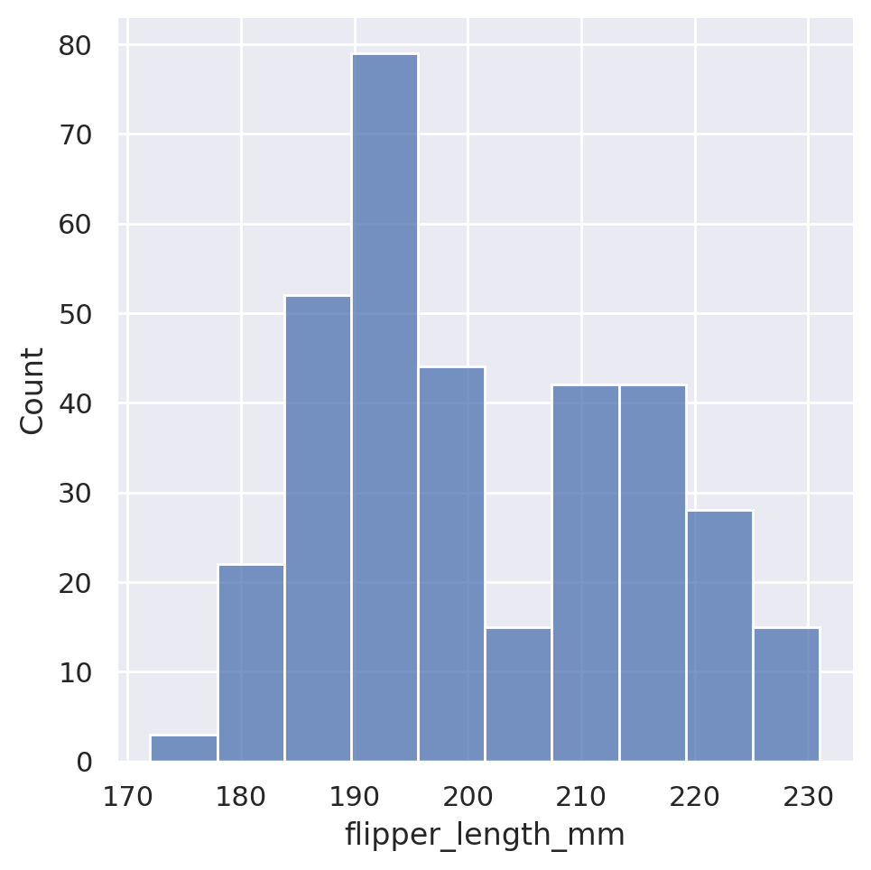
Seaborn automatically chooses what it feels is a reasonable number of bins for the dataset, but this is of course customizable via either the binwidth or the bins arguments, which will force the width or number of bins, respectively.
sns.displot(data=penguins, x='flipper_length_mm', binwidth=1)
plt.show()
sns.displot(data=penguins, x='flipper_length_mm', bins=5)
plt.show()
Just like with our relational plots, we can also condition our histograms on other features, colouring each member of the category separately.
sns.displot(data=penguins, x='flipper_length_mm', hue='sex')
plt.show()The default here is to create an overlapping histogram, but we could create stacked histograms, dodged (side-by-side) histograms, or even use the col or row options to produce multiple plots!
sns.displot(data=penguins, x='flipper_length_mm', hue='sex', multiple='stack')
plt.show()
sns.displot(data=penguins, x='flipper_length_mm', hue='sex', multiple='dodge')
plt.show()sns.displot(data=penguins, x='flipper_length_mm', col='sex', height=3.5)
plt.show()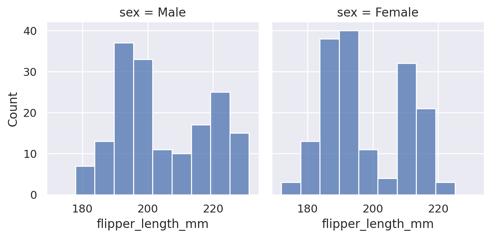
While the histogram option provides the exact count of the underlying values contained in our dataset, sometimes we may wish to approximate the distribution of data. This is done using kernel density estimation, which plots a smooth, continuous density estimate. Just like with the relational plots, we can access this new plot type using the kind='kde' option.
sns.displot(data=penguins, x='flipper_length_mm', kind='kde')
plt.show()Just like we were able to adjust the bin sizes for the histogram, we can adjust the ‘bandwidth’ of our estimation. This will vary the amount of smoothing that is applied in the end distribution:
sns.displot(data=penguins, x='flipper_length_mm', kind='kde', bw_adjust=0.25)
plt.show()
sns.displot(data=penguins, x='flipper_length_mm', kind='kde', bw_adjust=4)
plt.show()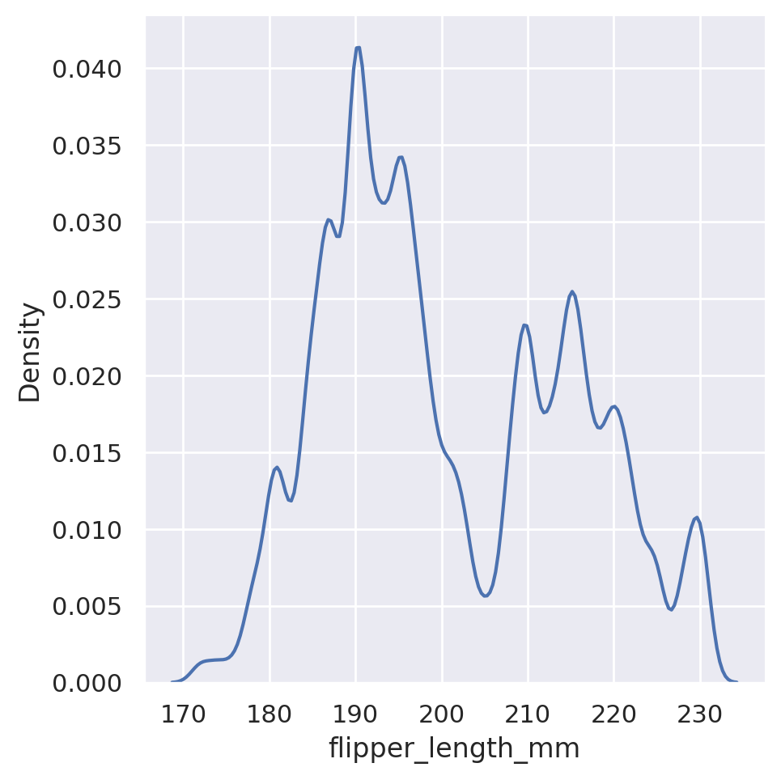
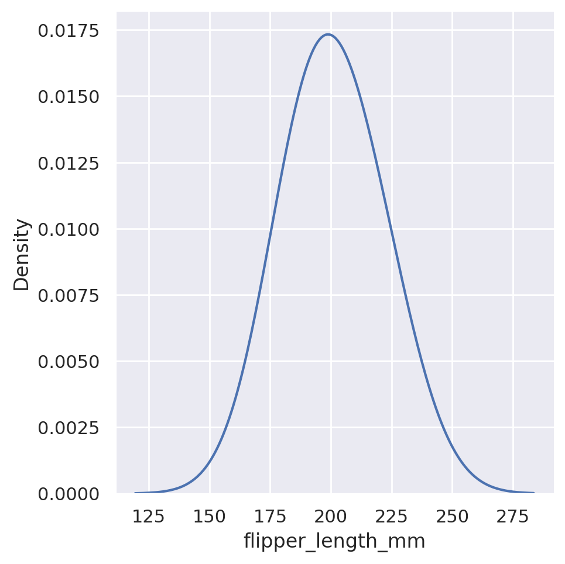
Finally, we can have both types of plots in action at the same time by including the optional kde argument:
sns.displot(data=penguins, x='flipper_length_mm', kde=True, hue='species')
plt.show()Summary
To summarize distributions available in Seaborn:
displotis the go-to tool to create a statistical comparison plot between two numerical columns- These plots default to histograms, but other options are available:
kdewill produce an estimation of the underlying densityecdfwill produce a cumulative distribution function
- A shortcut to include both a histogram and a KDE can be used by setting the argument
kde=True huecan be adjusted to provide insight into extra categorical featuresrowandcolwill split our plot out into multiple facets, according to the categories found in the datasets
Challenge 4
Categorical Plots
Suspicious…
Relational plots let us quickly view relationships between two sets of numerical features. Categorical plots will allow us to do the same where one (or both) of the features is categorical (divided into discrete groups).
The catplot method will provide us a unified high-level interface to a variety of different plots. The default behaviour of catplot is to produce a non-aggregated view of the categories in a strip plot.
sns.catplot(
data=penguins, x='species', y='flipper_length_mm')
plt.show()This is a categorical version of a scatter plot, in which all of the data for a single category is plotted at the same horizontal position, but with a small amount of horizontal ‘jitter’ added so that data points with identical numerical values do not completely overlap. This gives us a general idea of how the data is distributed within a category: do most of the penguins have similar flipper lengths within a species, or do they spread out to cover a wide range?
The most commonly used categorical plot however, is the bar plot. Bar plots are something that we are likely all familiar with, as human beings living in a society of.. people. However, typically when you see a bar plot, it is representing some sort of aggregation of our data. What is the average flipper length of the various penguin species? How many penguins live on each island? As the data stands, we do not have this information directly - it is non-aggregated, row level data. We could use our skills with Pandas to group the data according to the categories of interest and apply some statistic measures to the numerical columns of interest, and then use a matplotlib or Seaborn plot to display the results of that aggregation. However, Seaborn has developed tools that allow us to skip the grouping steps ourselves and allow the plotting package to do the grouping and statistical analysis behind the scenes. This has two advantages:
- The code is shorter and more precise, leading to easier understanding for others. This helps with code transparency.
- Seaborn also provides confidence intervals to include in its aggregated bar plots, which would be an extra level of complexity added to a manual grouping of the data.
In Seaborn, a barplot operates on the full dataset to obtain an estimate of some aggregation function (which is the mean by default). It will also default to providing an estimation of the confidence interval on its estimates. Just like with all of the other Seaborn plots, we can add an additional feature for free via the hue styling choice.
sns.catplot(
data=penguins, x='species', y='flipper_length_mm',
kind='bar', hue='sex')
plt.show()If we wish to summarize a different aggregate statistic, there are built in options: estimator='mean', 'median','min', and 'max' will all work.
sns.catplot(
data=penguins, x='species', y='flipper_length_mm',
kind='bar', hue='sex', estimator='max')
plt.show()
sns.catplot(
data=penguins, x='species', y='flipper_length_mm',
kind='bar', hue='sex', estimator='min')
plt.show()
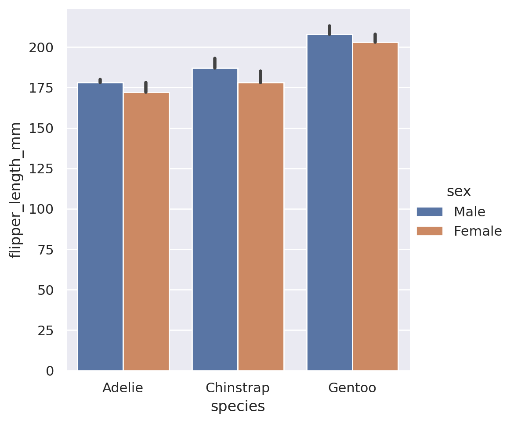
Advanced Tip - Callable Estimators!
In addition to the built in estimators, we can also use estimators for external functions. The function is required to take as an input a vector of values, and output a single value that summarizes that vector. The Python library numpy is the go-to resource for mathematical functions in Python. If we use numpy, we can send any sort of estimator to the barplot! Common statistical functions in numpy include sum, prod, mean, std, and var.
import numpy as np
sns.catplot(
data=penguins, x='species', y='flipper_length_mm',
kind='bar', hue='sex', estimator=np.sum)
plt.show()One last unique piece that you might be interested in is the orientation of the plot. In the above examples, we gave our categorical category to the x feature, and y held the numerical values. If we wish to have a horizontal set of bars instead, we can simply swap these:
sns.catplot(
data=penguins, x='flipper_length_mm', y='species',
kind='bar', hue='sex')
plt.show()Summary
To summarize the categorical plots available in Seaborn:
catplotis the go-to tool to create a statistical comparison plot between a numerical and categorical column- These plots default to categorical swarmplots (no, I do not know why bar is not the default) but other options are available. These options can be organized into three broad subcategories.
Categorical scatterplots:
swarmstrip
Categorical distribution plots:
boxviolinboxen
Categorical estimate plots:
pointbarcount
huecan be adjusted to provide insight into extra categorical featuresrowandcolwill split our plot out into multiple facets, according to the categories found in the datasets- By swapping the
xandyvariables, we can choose which orientation the plot will display in
Challenge 5
7.4 Saving your Plots
We’ve now done all this work to make amazing incredible charts that produce stunning visuals for our datasets. Chances are, however that you do not want these images to live solely in your Jupyter notebook. You might want it for a presentation or a report. So, we need to save these images so we can access them outside of our Python environment. To do this we use the plt.savefig() method. This method will save the currently open figure. This is the figure that has not yet been shown on screen! Any call to save a plot must come before we display it via plt.show(), as this actually closes the figure/plotting device so we can start our next one!
No Show and Tell!
This point is important enough that I am repeating it here. Always save your figure before showing it!
Let’s create a plot, view it, and save it. We will save it to the analysis folder in our project structure.
sns.catplot(
data=penguins, x='species', y='flipper_length_mm',
kind='bar', hue='sex'
)
plt.savefig('../analysis/penguins.png', bbox_inches='tight')
plt.show()
You will notice that I used an optional argument here called bbox_inches. This is entirely optional, but when used it will cut out any empty whitespace on the sides of the figure before saving. I find it makes for cleaner looking images at the end, so I will often use this argument. And that’s it, we now have our image saved and ready for use elsewhere!
Advanced Tip - Changing the Figure Size
We might want to vary the shape or size of the plot we are producing. There are two ways to do this, depending on the type of figure we have created.
Axes-Level (Matplotlib Style) Figures
If we are working directly with matplotlib or the axes-level seaborn functions, this is done by initializing the figure with a figsize command before creating any plot elements:
plt.figure(figsize=(10, 8))
plt.plot(...)
sns.scatterplot(...)
plt.savefig()
plt.show()The figsize argument inside the plt.figure method specifies the required width and height in inches.
Figure-Level (Seaborn Style) Figures
If we are working with the figure-level Seaborn interface, we cannot access the figure attributes externally. However, Seaborn has given us arguments we can pass directly to the plot method itself to set the figure size via the height and aspect arguments.
sns.relplot(data=..., height=5, aspect=0.5)
plt.savefig()
plt.show()The height argument indicates the required height of each subplot in inches, while the aspect argument supplies the aspect ratio such that the width = aspect * height. Note that height applies to every individual subplot in the plot, not the overall image!
7.5 Online Galleries
All of the tools described above are a great way to start visualizing your data, but there are many other libraries and tools available. If you ever need inspiration for a new visual, or simply need a reminder on what code you would need to create a specific chart, the Python Graph Gallery is a fantastic resource. It contains examples as well as code for over 40 different types of charts using Python code.